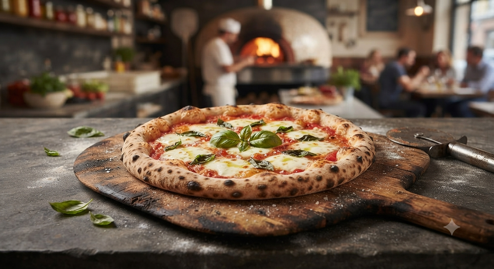
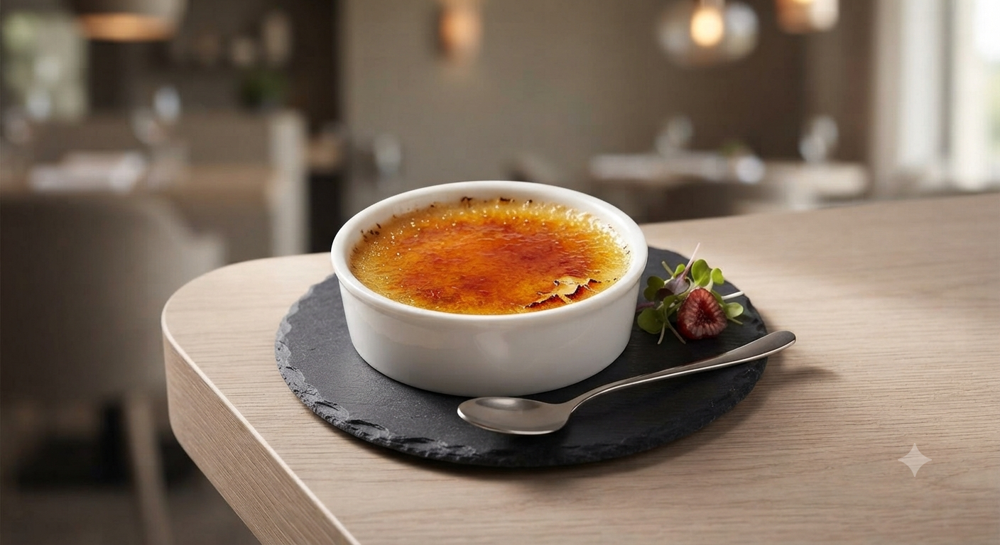
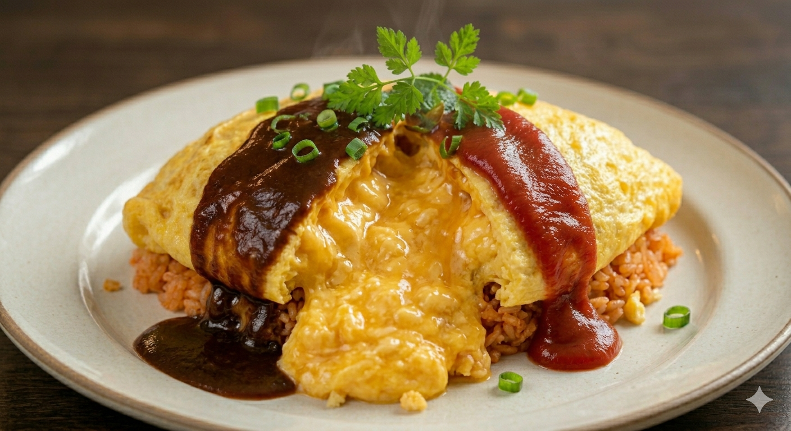
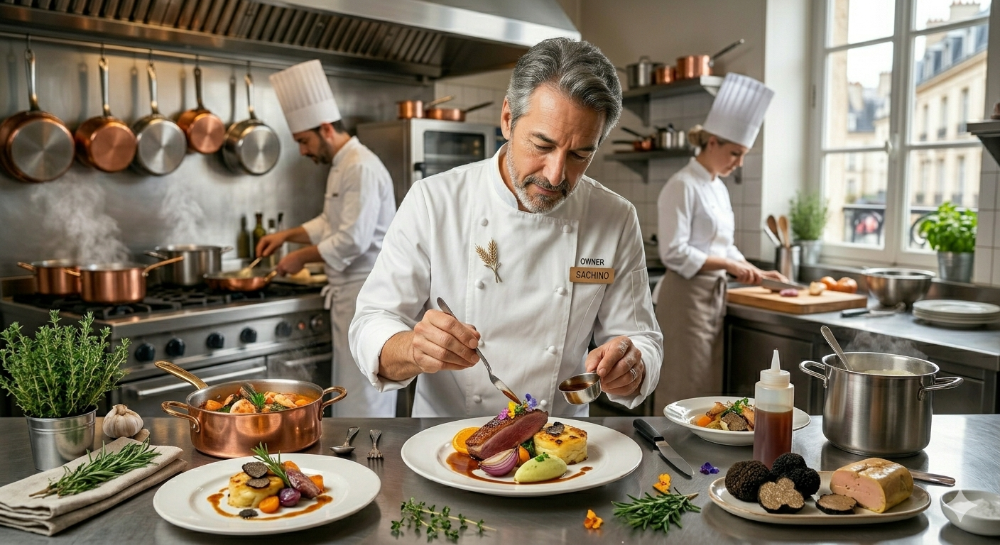

OUR DISHES おすすめメニュー

オムライス ハヤシソース
圧倒的人気No.1
花巻の名物味

粗挽きハンバーグ
肉の旨味をダイレクトに
満足感たっぷり

釜焼きピザ
リーズナブルで大満足
本格派のボリューム

ハイカラプリン
絶句するほどの旨さ
食後の至福

バターの香りと絶妙な火加減。口に入れた瞬間に溶けるような食感は、熟練の職人だからこそ成せる業です。
コク深く、酸味のバランスを追求した特製ソース。ライスとの相性を極限まで高め、後を引く美味しさを実現。
名物「ハイカラプリン」は、絶妙な硬さとほろ苦いカラメルが絡み合う、お食事後の必須アイテムです。
圧倒的人気No.1
花巻の名物味
肉の旨味をダイレクトに
満足感たっぷり

リーズナブルで大満足
本格派のボリューム

絶句するほどの旨さ
食後の至福

1999年の創業以来、一貫して大切にしてきたのは、気取らず、でも驚きのある美味しさを提供することです。
オムライスのライス一つとっても、ただのケチャップライスではありません。バターで丁寧に炒め上げ、卵との一体感を追求した「ハイカラ流」のこだわり。お客様の「美味しい!」という笑顔こそが、私たちの原動力です。
ハイカラヤの美味しさや職人のこだわりを、より温かくお客様にお届けするために。私たちがこれから取り組んでいきたい「あればいいな」のサービス構想です。
公式HPでの旬の食材紹介に加え、お席の卓上ポップやお会計時のミニメッセージカードを導入。その日仕入れた岩手県産の野菜や卵の産地、シェフの想いを直筆の温もりとともにお伝えします。
公式LINE会員様限定で、ご自宅のオムライスがお店の味に近づくちょっとしたコツや、自家製ハヤシソースに合わせる隠し味のヒントを配信。お店の外でも繋がれるワクワクをお届けします。
📍
〒025-0039 岩手県花巻市諏訪町2丁目1-14
(花巻PAスマートICから車で約5分)
【定休日】
毎週火曜、第1・3火水曜
※現在はランチ営業のみとなっております
※駐車場は12台分完備。満車の際はお待ちいただく場合がございます。
アットホームな雰囲気のお店です。未経験の方も大歓迎！シフトや働き方など、まずはお気軽にご確認ください。